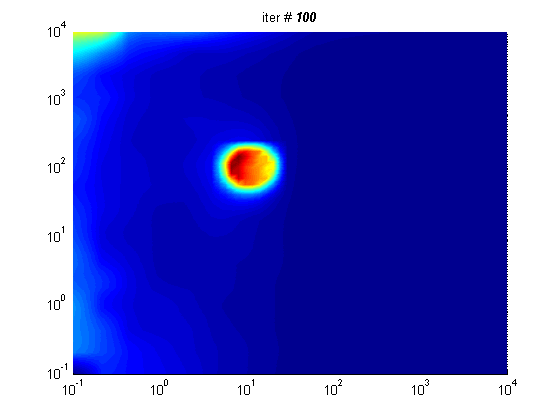

2015-04-15
本周课题内容
- Shipping CONTIN to 2D inversion case
- Phase Correction
- original data
- after PC
- inversion results
16x16 meshgrid, play at 8x speed, Max Iteration times:100

(left: origial 2 channel data; right: amplitude)

BestNormalWorse
进度与计划
下阶段主要任务：
- CONTIN（2D）反演结果
- DSD专利
2015-04-27
本周课题内容
- CONTIN(2D) Results
- Phase Correction
- NEEDED!!!
- Analysis
- More...
- Phase Cycling
- Introduction
- Example
α=0.01; Elapsed time: 137.0902 min
α=0.1; Elapsed time: 192.0366 min.
α=0.1; Elapsed time: 138.4185 min.
The signal amplitude is always positive even at large time.
However, as we know, the signal decays as time increases, and it will finally approach zero.
The amplitude which contains only positive data cannot be used for estimating the relaxation time distribution. Because the never approaching zero signal will be interpreted as the result of a long relaxation time. Also, the standard deviation of noise cannot be calculated from the amplitude.
进度与计划
previous state
current state
下阶段主要任务：
- 反演结果对比与评价
- DSD专利
Support or Contact
Find something interesting? Contact me .